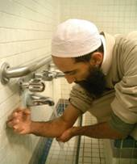

1. Stand upright facing the direction of Al-Ka'bah. This position is called Qiyaam and the direction is called Qiblah in Arabic. The Qiblah in North America is towards the east with a slight angle towards the north.
2. Make Niyyah (intention) in your heart for the prayer you want to pray.
3. Raise your hands to your ears and say: "Allahu Akbar.” This means: (Allah is the Greatest). This is called Takbiratul Ihram
4. Now place your right hand on top of your left hand on the chest and look downward to the place where your forehead will touch the ground in the Sujood (prostration) and recite silently:
"Subhanaka allahumma wa bi hamdika wa tabara kasmuka wa ta'ala jadduka wa la ilaha ghairuka."
سبحانك اللهم و بحمدك، وتبارك اسمك، و تعالى جدك، ولا إله غيرك
This means: “O Allah, how perfect You are and praise be to You. Blessed is Your name, and exalted is Your majesty. There is no god but You.” [Only recite this supplication, Subhanaka, at the beginning of the first Rak'ah]
Then recite silently:"A'udhu billahi minash shaitanir rajim."
أعوذ بالله من الشيطان الرجيم
Ihis is called Ta'awwudh, and it means: “I seek shelter in Allah from the rejected Satan.”
Then recite: "Bismillahir rahmanir rahim."
بسم الله الرحمن الرحيم
This is called Tasmiyah, and it means: “In the name of Allah, the most Gracious, the most Merciful.”
After this, recite Suratul Fatihah (the opening chapter) of the Noble Qur'an:
"Al hamdu lil lahi rabbil 'alamin. Arrahmanir rahim. Maliki yawmiddin. Iyyaka na'budu wa iyyaka nasta'in. Ihdinas siratal mustaqim. Siratal ladhina an'amta'alaihim, ghairil maghdubi'alaihim wa lad dhallin. (Amin)"
الحمد لله رب العالمين، الرحمن الرحيم، مالك يوم الدين، إياك نعبد وإياك نستعين، اهدنا الصراط المستقيم، صراط الذين أنعمت عليهم غير المغضوب عليهم ولأ الضا لين
This means: "All praises and thanks be to Allah, the Lord of the worlds, the most Gracious, the most Merciful; Master of the Day of Judgment. You alone we worship, from You alone we seek help. Guide us along the straight path - the path of those whom You favored, not of those who earned Your anger or went astray.”
You must recite Surat Al-Fatihah in each unit (Rak’ah) of the prayer, if you pray alone. However, if praying behind an Imam and he recites loudly, then it is not necessary for you to recite it
Now recite any other passage from the Noble Qur'an. For example: "Bismillahir rahmanir rahim Qul hu wal lahu ahad, allahus samad, lam yalid wa lam yulad, wa lam ya kul lahu kufuwan ahad."
بسم الله الرحمن الرحيم قل هوا لله أحد،الله الصمد، لم يلد و لم يولد، و لم يكن له كفوا أحد
This means: “In the name of Allah, the most Gracious, the most Merciful. Say, He is Allah, the One. Allah is Eternal and Absolute. He begets not, nor was He begotten. And there is none co-equal unto Him.”
Now bow down saying: "Allahu Akbar" and place your hands on your knees and say silently: "Subhana Rabbiyal Adhim." This means: (How Perfect is my Lord, the Supreme) three times. This position is called Rukoo'. Keep your head in line with your back, and look downward to the place of Sujood.
Stand up from the bowing position saying: "Sami'Allahu liman hamidah" (Allah hears those who praise Him)"Rabbana lakal hamd." This means: (Our Lord, praise be to You).
Prostrate on the floor saying: "Allahu Akbar" with your forehead, nose, palms of both hands, your knees, and toes all touching the floor. Then recite silently: "Subhana Rabbiyal A'la." (How Perfect is my Lord, the Highest) three times. This position is called Sujood. Keep your arms away from the sides of the body and the ground.
Sit up from the floor saying Allahu Akbar. Sit upright with your knees bent and palms placed on them and say: “Rabbighfir li.”
رب اغفر لي
This means: “O my Lord! Forgive me.”
Say "Allahu Akbar" and again prostrate in the Sujood position. Recite "Subhana Rabbiyal A'la" three times. Sit up from this position saying "Allahu Akbar"
This completes the first Rak'ah or unit of Salah. Now stand up for the second Rak'ah and perform it in the same way, except that you do not recite Subhanaka at the beginning, and after the second Sujood (prostration) you sit on the left leg while keeping the right foot upright and put your right hand on the right thigh, with all fingers together in a fist except the index finger. Stick the index finger straight out. Put your left hand on the left thigh. Now recite Tashahhud silently:
"At-Tahiyyatu lillahi was- Salawatu wat-Tayyibatu.As-Salamu ' alaika ayyuhannabiyyu wa rahmatullahi wa barakatuhu. Assalamu 'alaina wa’alaibadil-Lahis -Salihin ash hadu al-La ilaha il-Lal lahu wa ash hadu anna Muhammadan abduhu wa rasuluhu."
This means: “Greetings, prayers and goodness belong to Allah. Peace be on you, O Prophet and the mercy of Allah and His blessings. Peace be on us and on the righteous servants of Allah I bear witness that there is no god but Allah, and bear witness that Muhammad is His servant and Messenger.”
In a three-Rak'ah Salah (as in Maghrib) or a four-Rak'ah Salah (Dhuhr, Asr, and Isha) you stand up for the remaining Rak'ah(s) after you have done Tashahhud. For a two-Rak'ah Salah you remain seated after Tashahhud and then recite silently Assalatul-Ibrahimiyah:
اللهم صل على محمد وعلى آل محمد، كما صليت على إبراهيم وعلى آل إبراهيم، وبارك على محمد وعلى آل محمد، كما باركت على إبراهيم وعلى آل إبراهيم، في العالمين إنك حميد مجيد.
"Allahumma salli 'ala Muhammadin Wa 'ala ali Muhammadin Kama sallaita 'ala Ibrahima wa 'ala ali Ibrahima wa barik 'ala Muhammadin wa 'ala ali Muhammadin Kama barakta ' ala Ibrahima Wa ' ala ali Ibrahima Fil a'lamina Innaka hamidun Majid."
“O Allah, let Your mercy come upon Muhammad and the family of Muhammad as You let it come upon Ibrahim and the family of Ibrahim O Allah, bless Muhammad and the family of Muhammad as You blessed Ibrahim and the family of Ibrahim. Truly You are Praiseworthy and Glorious.”
After this say silently: "Allahumma inni a'udhu bika min adhabi jahanam wamin adhabil qabri wamin sharri fitnatil mahya wal mamat wamin sharri fitnatil masihid dajjaal. Rabbi-ghfir li waliwalidayya, rabbi-rhamhuma kama rabbayani saghira."
اللهم إني أعوذ بك من عذاب جهنم، و من عذاب القبر، و من فتنة المحيا و الممات، و من فتنة المسيح الدجال، رب اغفر لي و لوالدي رب ارحمهما كما ربياني صغيرا.
This means: “O Allah! I seek refuge in You from the torment of the Hellfire, from the torment of the grave, from the trials and afflictions of life and death, and from the deception of the False-Christ. O my Lord! Grant me and my parents forgiveness, and bestow Your mercy upon them, just as they brought zme up when I was small.”
Now turn your face to the right saying: "Assalamu alaikum wa rahmatullah" (peace and the mercy of Allah be on you) and then to the left repeating the same words.
This completes the two-Rak'ah Salah.
In the three or four-Rak'ah prayers (Dhuhr, Asr, Maghrib, and Isha) the whole procedure is repeated in the remaining Rak'ah(s), except after Tashahhud, you say "Allahu Akbar" and stand up and only recite Surat Al-Fatiha in Fard prayers and no other Surah, then continue doing the rest of the actions as you have done before (Rukoo', rising, Sujood). Then stand again for the fourth Rak'ah.
Also, in the last Rak'ah of any prayer, after you have made your Sujood, sit up and silently recite both Tashahhud and Salatul Ibrahimiyyah. At the end of any prayer, you must finish by making Tasleem. When to Recite Aloud or Silently:
During obligatory Fajr prayers, you recite the Qur'an aloud in both Rak'ahs. You also recite the first two Rak'ahs of the obligatory prayers of Maghrib and 'Isha aloud as well.
However, the third and fourth Rak'ahs are always recited silently during obligatory prayers. Also, in the Dhuhr and Asr prayers, the recitation is always silent for all four Rak'ahs.
Furthermore, the one who leads Jumu'ah prayers (Friday prayer in place of Dhuhr) will recite the Qur'an aloud.
Before we perform Salah we must first prepare ourselves. This preparation includes making sure that we are clean from any physical impurities and performing Wudu.
Wudu (ablution) is required for performing Salah. We cannot offer our Salah without first making Wudu. Here are the steps to take:
First, make the Niyyah (intention) in your heart that this act of Wudu is for the purpose of preparing for Salah, and say: "Bismillah" (in the name of Allah)
Wash both hands up to the wrists (starting with the right hand) three times, making sure that water has reached between the fingers.
Take water with your right hand, put it into your mouth and rinse thoroughly three times.
Take water with your right hand, splash it into your nose and blow it out three times. (Use the left hand if necessary to help blow it out).
Wash your whole face three times repeatedly. (The whole face includes: the right ear to the left ear, and the forehead to the bottom of the chin).
Wash the right arm thoroughly from wrist to elbow three times, and make sure that no part of the arm has been left unwashed. Repeat with the left arm.
Move the palms of the wet hands lightly over the head, starting from the top of the forehead to the back of the head, and passing both hands over the back of the head to the neck, and then bringing them back to the forehead.
With the same water, rub the grooves and holes of both ears with the wet index fingers, while also passing the wet thumbs behind the ears from the bottom upward.
Finally, wash both feet to the ankles three times, starting with the right foot. Make sure that water has reached between the toes and covered the rest of the foot.
At the end of the above steps recite: "Ashhadu alla ilaha illallahu, wa ash-hadu anna muhammadan abduhu wa rasuluhu.”
"أشهد أن لا إ له إلا الله وحده لا شريك له، و أشهد أن محمدا عبده و رسوله"
This means: “I bear witness that there is no deity worthy of worship except Allah alone, and I bear witness that Muhammad is His servant and His messenger.”
Note: If you put on your socks, shoes, or sandals (only those that cover most of the foot) while you have a valid Wudu, it is not necessary to take them off every time you need to renew your Wudu. You can leave them on and wipe the top of each covered foot once with wet hands in place of washing the entire foot. You may do this up to twenty-four hours, or for three days if you are on travel.